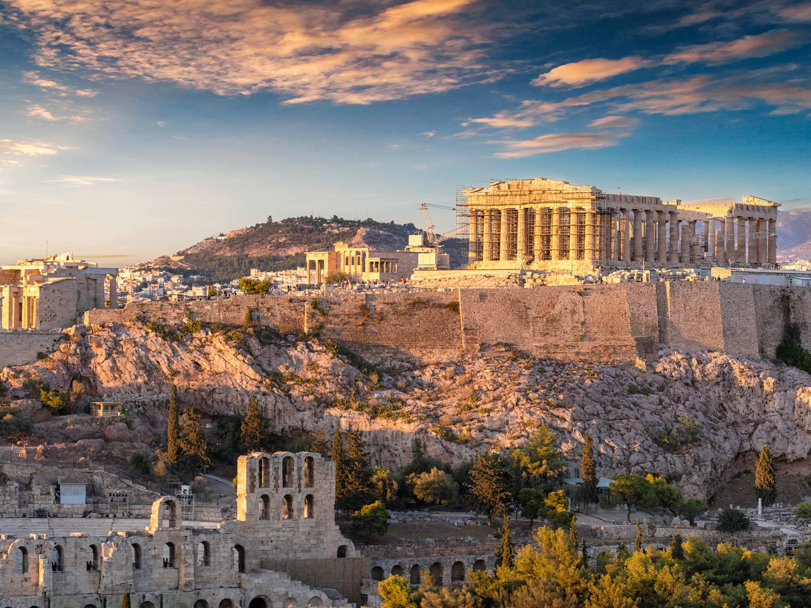
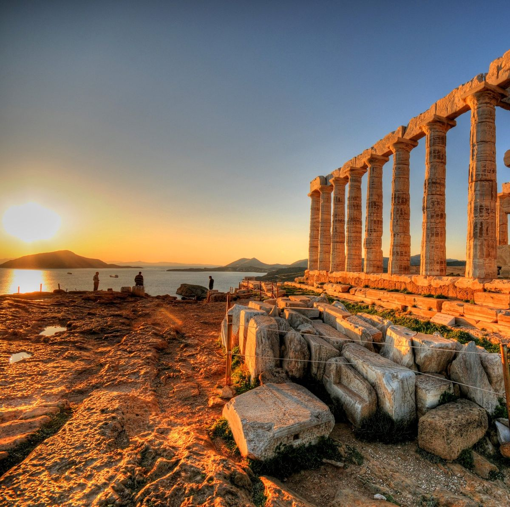
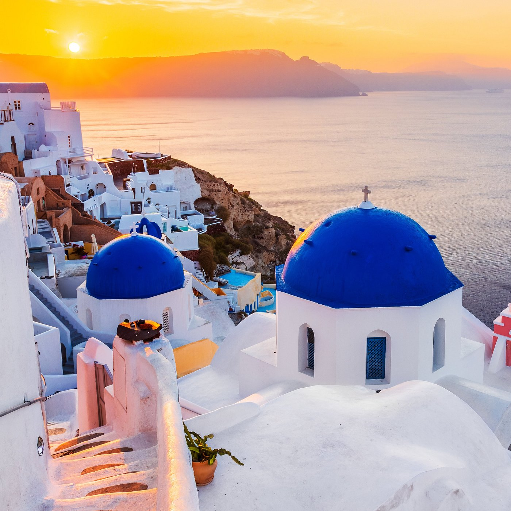

Giorno 1: Arrivo ad Atene
Sono finalmente arrivato ad Atene, la città dalle radici antiche e dalla storia affascinante. Dopo essermi sistemato in albergo, ho deciso di esplorare il quartiere Plaka, con le sue stradine tortuose e le taverne accoglienti. Mi sono perso tra i vicoli, ammirando le bancarelle di souvlaki e le vetrine piene di oggetti artigianali. La vista dell'Acropoli illuminata al tramonto è stata mozzafiato.
Giorno 2: All'Acropoli
Oggi è stata una giornata indimenticabile. Sono salito sull'Acropoli, ammirando i maestosi resti dei templi antichi. Davanti al Partenone mi sono sentito piccolo di fronte alla grandezza del passato. Ho anche visitato il Museo dell'Acropoli, dove ho imparato di più sulla storia e l'arte dell'antica Grecia.

Giorno 3: Escursione a Capo Sounion
Oggi ho preso un'escursione per visitare Capo Sounion, famoso per il Tempio di Poseidone. Il viaggio lungo la costa è stato spettacolare, con panorami mozzafiato sul Mar Egeo. Arrivati a destinazione, ho ammirato il tempio mentre il sole tramontava. È stata un'esperienza magica.
Giorno 4: Esplorando i vicoli di Santorini
Oggi ho visitato l'incantevole isola di Santorini, famosa per i suoi paesaggi mozzafiato e i tramonti indimenticabili. Ho passeggiato per i caratteristici vicoli di Fira e Oia, con le loro casette bianche e i tetti blu che si affacciano sul mare. Ho visitato anche i siti archeologici dell'isola e ho imparato di più sulla sua storia antica.
Giorno 5: Ritorno ad Atene
È giunto il momento di dire addio a queste isole magiche e tornare ad Atene per il mio volo di ritorno. Ripenso con nostalgia alle esperienze straordinarie vissute in Grecia: dalle antiche rovine all'ospitalità calorosa dei greci, ogni momento è stato un tesoro da conservare nei miei ricordi. Spero di poter tornare presto in questa terra ricca di storia e bellezza.